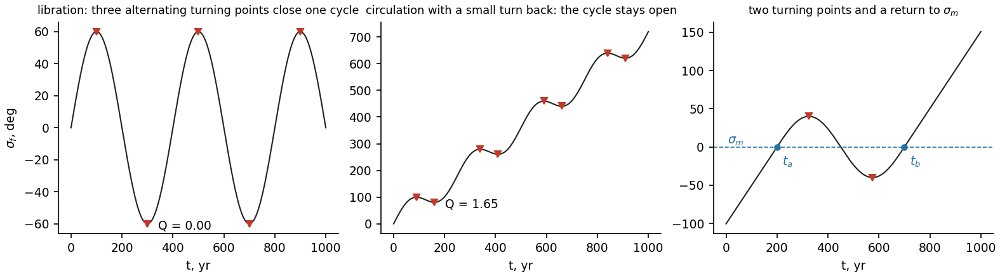
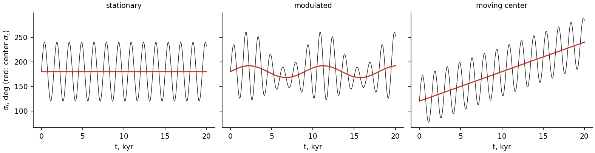
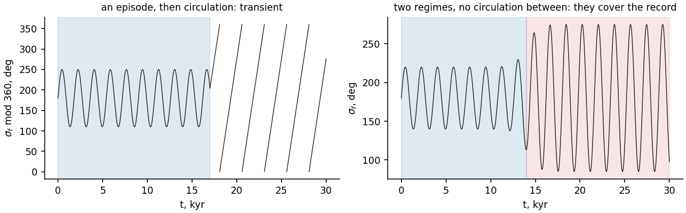

What the angle does¶
This page describes how the filtered angle \(\sigma_f\) (From the integration to the angle) is read as
geometry: where it turns back, whether its swings close into cycles about a center, where such a libration starts
and ends, and how the whole record is summarized in angle_status. Nothing here asks whether \(a\) responds to the
angle; that is the subject of Is it this resonance?. All rules below are those of a mean-motion
resonance; secular and Lidov-Kozai angles use the same turning points, cycles and episodes
(Secular and Lidov-Kozai).
Turning points¶
Question: where does the angle turn back? A turning point (TP) is a local maximum or minimum of \(\sigma_f\) whose
prominence (the height of the extremum above the higher of its two bases, the lowest points between it and the
nearest more extreme value on either side, as in scipy.signal.find_peaks) is at least
with the floor 1° and the factor MMR_TP_RIPPLE_FACTOR = 4. Here \(r\) is the half-amplitude of what \(\sigma_f\)
still holds faster than the shortest libration \(P_\text{floor}\) (the 95th percentile of that fast residual, or the
planetary ripple that could not be removed). A wave of half-amplitude \(r\) makes extrema of prominence up to \(2r\), so
the factor 4 keeps it from making turning points. The libration itself is subtracted before \(r\) is measured, and
each run of turning points (below) gets its own \(p_\text{TP}\) from its own samples, so a noisy stretch elsewhere in
the record does not erase the swings of a quiet libration. Turning points alternate: of two maxima in a row the
higher is kept.
Cycles and their closure¶
Three alternating turning points (max–min–max or min–max–min) make one full cycle, one libration period:
A half-cycle joins two neighboring turning points; its half-amplitude is \(A_i = \tfrac12\lvert\sigma_{i+1} - \sigma_i\rvert\) and its midpoint \(m_i = \tfrac12(\sigma_{i+1} + \sigma_i)\). The full-cycle center and half-amplitude are the means of two neighboring half-cycles, which cancels the alternation.
Question: does the angle come back, or does it only pause on its way round? A cycle is closed when its net advance is smaller than its swing:
This is the same as each of the three turning points lying on its own side of the cycle center, or the two half-swings differing less than threefold; there is no setting. A circulation that stalls and turns back a little closes no cycle. An episode needs at least one closed cycle, not all: the entry and exit half-cycles of a capture, or a tadpole that becomes a horseshoe, often leave an edge cycle open.
Closure by phase return. A cycle can start between two turns, so two opposite turning points (\(\sigma_1\) at \(t_1\), \(\sigma_2\) at \(t_2\)) are also one closed cycle when the angle crosses a level between them before \(t_1\) (at \(t_a\)) and after \(t_2\) (at \(t_b\)) in the same direction and is back in the same state:
- \(\lvert a(t_b) - a(t_a)\rvert \le 0.05\times\) the swing of \(a\) on \([t_a, t_b]\), and \(\dot\sigma(t_b)/\dot\sigma(t_a)\)
within \(1 \pm 0.05\) (
LIBRATION_RETURN_TOL= 0.05); - \((t_b - t_a)/\big(2(t_2 - t_1)\big)\) within \(1 \pm 0.25\) (
LIBRATION_RETURN_PERIOD_TOL): a libration spends as long going from the level to a turn as coming back, while a circulation creeping back gives about 0.5; - \(a\) carries the swing: \(\operatorname{corr}\big(\dot\sigma,\ \operatorname{sign}(c)(a - \bar a)\big) \ge 0.9\)
(
LIBRATION_RETURN_IDENTITY_CORR_MIN); - the swing is symmetric: between the turning points the angle crosses the level back as fast as at \(t_a\), \(\lvert\dot\sigma(t_m)/\dot\sigma(t_a) + 1\rvert \le 0.05\).
The mid-level \((\sigma_1 + \sigma_2)/2\) is a convention, so the levels at \(k/20\) of the swing
(LIBRATION_RETURN_LEVELS = 19) are tried as well, and a level counts only inside a band of at least two
neighboring levels that also close (LIBRATION_RETURN_BAND_LEVELS, LIBRATION_RETURN_MID_BAND_LEVELS): a real
return holds over a band of sections, a match at one isolated level is a coincidence. Levels whose crossing may lie
beyond the record neither close nor break a band, and the crossings are sought inside the run's own regime between
jumps of \(a\). Such a run is an accepted stationary episode of one cycle of period \(t_b - t_a\). A verdict resting on
it has its confidence capped at medium (cap one_return_cycle, LIBRATION_RETURN_CYCLE_CAPS_MEDIUM).

Runs and episodes¶
Turning points are grouped into runs. A run breaks where a gap exceeds
LIBRATION_EPISODE_GAP_FACTOR = 3 times its median half-period, where a half-amplitude reaches \(\pi\) (the angle
goes over the top), or where two consecutive midpoints differ by more than \(\pi\) (a slip). A Lidov-Kozai \(\omega\)
breaks at half a turn instead (ZLK_RUN_BREAK_HALF_AMPLITUDE_DEG = 90°; Secular and ZLK).
Question: is this run a libration about a center? A run is an accepted episode when it has at least
LIBRATION_MIN_TURNING_POINTS = 3 turning points (one full cycle; or two closed by their phase return), at least
one closed cycle, and a center of one of three kinds:
- stationary: the bands \([m_k - A_k,\ m_k + A_k]\) of all its full cycles share a point. With fewer than
LIBRATION_CENTRE_MIN_ESTIMATES= 2 independent cycles the episode is accepted but its center is not measured (capthree_tp_episode, at mosthigh); - modulated: the cycle centers turn back at least
LIBRATION_CENTRE_RETURNS_MODULATED= 3 times within a range belowLIBRATION_MODULATED_RANGE_MAX_RAD= \(\pi\). Unequal members of a resonance multiplet, or a slowly modulated resonant term, make the libration's amplitude and center oscillate (Morbidelli 2002, §9.4, pp. 224–226); the rule tests the observed returns, not a model of them. A secular or ZLK run needs one return, within a turn and under a cycle that swings over every center (Secular and ZLK); - moving center: the bands share a point in the frame \(\psi = \sigma - \sigma_c(t)\), and every band holds \(\psi = 0\). Here \(\sigma_c(t)\) is the minimum of the averaged disturbing function of the angle's planet, recomputed along the record from the slowly varying elements: the stable center of a resonance sits at that minimum (Gallardo 2006, §3, p. 30), and when the well changes much more slowly than one libration the angle librates about the moving minimum (the adiabatic condition: Wisdom 1985, pp. 274, 279). The track is accepted only when the observed cycle centers follow it better (in RMS) than the best fixed center and than the same track run backwards in time. This is done for two-body angles (1:1 and retrograde included) with the planet saved; this implementation has no directly averaged potential for three-body angles, which stay in \(\sigma\).
The center track in detail
The track is built only for a run that fails in \(\sigma\) and is not modulated. \(\sigma_c(t)\) is the minimum of the
full averaged potential (averaged_potential) at the elements averaged over \(P_c\), at nodes the larger of \(P_c\)
and the span / MMR_CENTRE_TRACK_NODES (400) apart, followed by descent from the previous node. A node without a
well, without a converged quadrature or within MMR_STRENGTH_MIN_DISTANCE_HILL (3) Hill radii of the planet
leaves the run in \(\sigma\). \(\psi\) is read at the turning points of \(\sigma\), and the force law of such an episode
is fitted in \(\psi\).
An accepted episode counts as a libration of this angle only when its median period is not shorter than the
shortest libration \(P_\text{floor}\) (a faster one is a forced wave the cutoff let through) and its center does not
run a full revolution inside it. A run whose center moves is tried again on its regular part (full periods within
LIBRATION_REGULAR_PERIOD_RATIO = 2 of the median, or without one slow edge half-cycle), and may be cut where its
regime changes: at a step of its center between two measured librations, or at a stall of a slowly moving center
(LIBRATION_REGIME_CUTS, LIBRATION_STALL_MIN_CYCLES = 3). Two joins undo a cut that separates no regimes (MMR):
a half-cycle over the top in \(\sigma\) but not in \(\psi\) (rule q, LIBRATION_FRAME_JOIN), and a leftover of a
stall cut that is the stall's own libration (rule s, LIBRATION_STALL_JOIN). A step or stall between two accepted
pieces in one libration region is a mark, not a boundary (rule regime_cut_mark, LIBRATION_REGIME_CUT_MARKS).
Rejected runs keep their reason
(too_few_tp, centre_moves, no_closed_cycle, over_the_top, edge) in episodes.csv.
Regime cuts in detail
A run still rejected for its moving center is cut where its regime changes, and the cut is kept only when the
regimes it claims are accepted. (1) A center step: a half-cycle with ≥ 3 turning points and a closed cycle on
each side, each side passing the band test while the two together do not, each side with a measured center, and
the cycle centers differing across the step by more than within either side. Failing that, (2) a stall of the
slow center: the longest stretch of ≥ LIBRATION_STALL_MIN_CYCLES independent cycles whose midpoints move less
per period than the cycles swing, at the run's own period, cut out as its own run. A steady drift has no stall
and is not cut.
Joins: rules q and s
A cut must separate two regimes. Rule q (frame join): over the top means over the potential's maximum, and the maximum moves with the well. Two runs broken by one half-cycle whose half-amplitude reaches \(\pi\) in \(\sigma\) are one run when the angle has a center track whose cycle centers follow it, no half-swing of the joined run reaches \(\pi\) in \(\psi = \sigma - \sigma_c(t)\), and the joined run passes the band test. A slow edge piece of the regular-part split that holds the joined half-cycle is judged in \(\psi\) too. A true crossing of the separatrix reaches \(\pi\) in \(\psi\) as well and stays a break. Example: 82831 13M−24, where the half-cycle at 8.76 kyr passes \(\pi\) in \(\sigma\) only because the Mars well moved during it: two episodes, 1.9–28.6 and 29.8–71.3 kyr, both about the moving center.
Rule s (stall join): after a stall cut, a leftover piece next to the stall joins it when the joined piece
passes the band test and the leftover carries the stall's oscillation: at least one of its full cycles (with
two of its own turning points) has the stall's period within LIBRATION_REGULAR_PERIOD_RATIO. Not the median:
ripple on the same wave adds turning points. A ripple of another period beside the stall has no such cycle and
is not joined. Example: 385266 16N−27, one forced wave of the circulating 3N−5 (5:3) at 56.6–98.7 kyr instead
of two pieces cut at 68.3 kyr. Both rules only change episode boundaries; each one that acts is listed in
rules_fired (frame_join, stall_join).
A step or stall inside one libration region is a mark
Rule regime_cut_mark (LIBRATION_REGIME_CUT_MARKS, an angle that is not 1:1): an episode boundary separates
two libration regions. Two neighboring accepted pieces of a standing center-step or stall cut are one
episode when the last full cycle before the cut and the first after it share a band and a period:
with \(m = (v_0 + 2v_1 + v_2)/4\), \(A\) the mean half-swing and \(P = t_2 - t_0\) of each cycle's three turning
points, and when the turning points of the joined stretch, the step or the stall included, span less than a
turn (\(\max v - \min v < 2\pi\)): a libration is an angle that does not take every value, so a center that
carries the swing around the circle leaves no region to be one of. \(\sigma\) then swings in one region across the
cut (the non-1:1 analogue of the 1:1 "same well"); the test adds no threshold of its own. The joined run keeps the band test's verdict when it passes; when it fails
only for its moving center it is accepted as regime_change with the center stationarity not measured. The cut
becomes a mark of the episode, centre_step@t0:t1 (the step half-cycle) or stall@t0:t1 (the stall) in
episodes.csv marks. Boundaries that stay: an accepted piece next to a rejected one (a drift: 385266
16N−27), facing bands that do not overlap (2013 VA14 60 kyr at 41.3–41.7 kyr, −4.5° at half-amplitudes
9.1/11.3°), a joined stretch that spans a turn (55390 1J+3S−1 at its 8.3-kyr center scale: the facing bands
share 17°, but the center travels −299° in 75 kyr and the stretch spans 455°; 482824 19N−32: 572°), and every
gap, circulation, passage over the top, jump of \(a\), action step and regular-part split. On the benchmark it
joins 8 boundaries in 6 angles and changes no status, level or reason.
Forced waves (rule F6)
Once each accepted episode's own response is measured (Is it this resonance?), an episode is a
forced wave of another argument, not an episode of the angle, when its identity fails with the wrong sign
(slope/\(c < 0\) at \(\lvert\text{corr}\rvert \ge\) MMR_IDENTITY_CORR_MIN), or when its period sits on a forced line
of the angle's lattice and its identity fails (the line alone suffices only with MMR_FORCED_WAVE_LINE_ALONE).
Forced waves are kept apart (episodes.csv forced_wave), and the response, the energy, the exit and the entry
are read again without them. Status, reason and confidence are those without them; only the reported word may
keep their loops (The reported angle word).
The example of a moving center is 2013 AS27 in 31E−36 (Gallery): its 260 turning points (period 150 yr, half-amplitude 24°) fail the band test in \(\sigma\) by 8.8°, because the Earth's well moves by about 57° in 20 kyr, and pass in \(\psi\) with a margin of 35.5°; the cycle centers lie 1.6° (RMS) from the track, against 14.4° from a fixed center and 28.2° from the reversed track.

A co-orbital turn in the edge trim¶
Question: does a 1:1 run lack only the turning point the filter hides? The filter's edge trim
(FILTER_EDGE_TRIM_CUTOFFS × \(P_c\), 55.5 yr for an Earth co-orbital at 1 kyr) hides a turning point there. For a 1:1
angle the reversal is then read on the raw angle averaged over MMR_COORBITAL_EDGE_TURN_ORBITS = 3 orbital periods
(which drops the ripple of one orbit): after the run's last turning point (before its first) the extreme of the
opposite kind, if it lies in the trim and the angle turns back from it before the record's edge. It counts when
- it swings at least
MMR_COORBITAL_EDGE_TURN_MIN_DEG= 20° on both sides (a convention); - it is a reflection on a top of the averaged potential (the planet's or L3's: a horseshoe turn), not a turn inside a tadpole or quasi-satellite well;
- \(a\) crosses \(a_P\) across it, as the identity \(\dot\theta = -\tfrac32 n (a - a_P)/a_P\) requires;
- \(|a - a_P|\) is mirrored, \(|\ln(\text{out}/\text{in})| \le\)
MMR_COORBITAL_TURN_ENERGY_TOL= 0.34: the averaged problem is time-reversible about a turn, a kick is not. Both sides are read on the same window, shrunk to the stretch left to the record's edge.
It is added as a turning point (edge_raw_tp in episodes.csv, geo_edge_raw_tp_t) only when it closes a cycle: the
run was no episode without it and is an accepted one with it. It never extends an accepted episode and never continues
the curve beyond the data (rule coorbital_edge_turn, MMR_COORBITAL_EDGE_TURN). 2006 BZ147 turns at 960 yr, 40 yr
before the end (swing 180°, at the planet, out/in 0.90): its horseshoe cycle 817–960 yr closes and the verdict is
transient. 2007 VU6 turns at 994 yr, but in the 6 yr left it swings back only 18.8°: no turning point.
Only 1:1: the potential gives a co-orbital turn its site and its mirror, so a reversal can be told from a ripple. Other resonances have no such test of a single turn here, and their trimmed edge stays unread.
A co-orbital episode ends only at a separatrix¶
Question: where does a 1:1 episode end? Only where \(\sigma\) crosses a separatrix: a half-cycle over the top, or
a turn of \(\sigma_f\) or of the orbit-averaged raw angle (rule coorbital_well_cut, MMR_COORBITAL_WELL_EPISODES).
A change of well (quasi-satellite, tadpole, horseshoe, a compound orbit)
or of amplitude inside the co-orbital wells is a sub-regime of one libration, not a boundary. The wells are those of
the averaged potential of the 1:1 force law (pendulum), on the run's window:
- a run whose cycle bands do not overlap is accepted when every full cycle's swing (its three turning points) holds a minimum of the potential, to within the run's turning-point prominence, and its cycle centers stay within one turn. The prominence is the smallest swing the run resolves as a turn: a cycle whose amplitude collapses within it misses its minimum by less (2021 XO3 1V−1: 4° and 8° at 11°), a ripple drifting past L5 by more (2022 BB2 1V−1: 7–25° at 4°);
- a run some of whose cycles hold no minimum is not lost whole (rule
coorbital_well_core,MMR_COORBITAL_WELL_CORE, the author 2026-11-14 on 2024 JR16). Its cores are the longest blocks of consecutive cycles that hold one, each accepted on its own (bands, or the wells test above). The first core continues back and the last one forward over the run's other turning points while \(\sigma\) stays in the same connected co-orbital region: no half-cycle crosses the planet (\(\sigma = 0\)) or L3 (\(\pi\)) unless the core itself crosses that line, none swings over the top, none circulates. The episode is the core with its continuation; the core alone gives the cycle count (core_t0_yr/core_t1_yr, markunheld@t0:t1). Cycles that miss the minimum between two cores split the run: two episodes, never bridged. Past a crossing the turning points are a rejectededgepiece: the episode ends at the separatrix. 2024 JR16 c005: core 132–856 yr, its last cycle (a 14° loop 243–271° drifting towards L3) misses the well, episode 132–929 yr,resonant/low (the force law fails); a JR16 clone integrated for 2000 yr crosses L3 near 1450 yr and its episode ends at 1488 yr (transient). 2022 BB2 1V−1: core 445–691 yr after circulation, then a ripple drifting towards L3 to the end, episode 445–926 yr. A wave riding a circulation crosses the planet and L3 within a few cycles and stays rejected; - two accepted neighbors, which
split_runsseparates where the next regime is slower or its center jumps, join when the half-cycle between them does not circulate and the joined run is accepted. A rejected neighbor is never joined; - no regime cut (center step, stall) applies to a 1:1 angle.
episodes.csv keeps the changes as annotations: wells, the wells of the run's cycles in time order
(qs>compound>horseshoe), and marks: well_change@t0:t1 (the half-cycle two cycles of different wells share),
amplitude_change@t0:t1 and kick@t (a jump of \(a\) inside either). An amplitude change is G2a's amplitude test on two
half-cycles each side of the transitional one (separation ≥ LIBRATION_ACTION_STEP_SEPARATION, ratio ≥
LIBRATION_ACTION_STEP_RATIO), in one well, with the turning points of the larger swings higher in the potential. A
run of several wells has the subtype regime_change, the floor of the fastest well it holds, and no L5 (one pendulum
per well). 2021 XO3: one episode 90–945 yr with amplitude changes at 326–446 and 708–809 yr; 469219 1E−1: one episode
24–950 yr, quasi-satellite then horseshoe.
Core, residence and sub-regimes of a co-orbital episode¶
Question: what is a 1:1 episode made of? Three intervals (rule coorbital_residence, MMR_COORBITAL_RESIDENCE):
- the core, from the first to the last measured turning point (
core_t0_yr,core_t1_yr); of a run continued beyond its well-holding cycles (rulecoorbital_well_core, above), those cycles only. Coverage, the edges and the margins read the run's turning points, the confidence's core cycles read the core; - the sub-regimes, the stretches of the core between its changes of well or amplitude (
subregimes,well@t0:t1); for two or more, each one's own 1:1 force law and energy integral at the angle's cutoff (subregime_checks,force/energy). They describe; the episode's own response decides. The header's orbit type is their wells in time order (compound: horseshoe → tadpole L4); - the residence, the stay in the co-orbital region around the core. It is inferred, not measured. The raw
angle averaged over
MMR_COORBITAL_EDGE_TURN_ORBITSorbits is cut into legs at its reversals ofMMR_COORBITAL_EDGE_TURN_MIN_DEG. By \(\dot\sigma = -\tfrac32 n (a - a_P)/a_P\) each reversal is a crossing of \(a_P\). From the core outwards the residence takes legs until one sweepsLIBRATION_EDGE_ARC_REVturns (an arc above \(2\pi\) is no piece of libration, as for the edge rule) or the record ends:residence_bounded_by_*=circulationoredge. An observed exit or entry bounds it at the core.edgemeans that the record ends inside the stay; it is no exit, and the continuation is undetermined.
The largest \(|a - a_P|/\Delta a_\text{max}\) at the reversals outside the core is reported (residence_zone_max)
but bounds nothing. Measured at 20 kyr, the accepted core of 2024 TY11 1M−1 starts at a turn of 2.2, where its own
force law passes.
2020 CB 1E−1: the quasi-satellite core 443–601 yr, then swings below the turning-point prominence. The residence runs from 443 yr (the leg before it sweeps 3.1 turns) to the record's end: 601 yr is no exit. 2024 TY11 20 kyr: core 2.65–8.69 kyr, residence from the record's start to 8.69 kyr (the next leg sweeps 4 turns). 2009 BE81 20 kyr: one episode 7.75–16.7 kyr. Its sub-regimes are tadpole L5, horseshoe, tadpole L4 and compound, and their laws read pass/pass, pass/fail, pass/pass and pass/pass.
The center and circulation¶
The slow center \(c(t)\) is \(\sigma_f\) smoothed over \(W_c\) = LIBRATION_CENTRE_CYCLES = 3 libration periods (3 \(P_c\)
without cycles). Its own turns need a prominence \(p_c = \max(10°,\ 2p_\text{TP})\)
(LIBRATION_CENTRE_TP_PROMINENCE_DEG, LIBRATION_CENTRE_TP_FACTOR). A monotone pass is the stretch of \(c(t)\)
between two of its turns, measured by its maximum minus its minimum.
Question: does the angle go round? The angle circulates when the largest monotone pass is at least \(2\pi\)
(rule G4): an arc longer than one revolution is never a piece of a libration. A staircase with small step-backs
circulates as well when the center advances by at least LIBRATION_CIRCULATION_NET_REV = 2 revolutions net over
the window (G4b). On an aliased step such a circulation has the subtype alias.
Drift. When rejected runs whose center moves cover at least LIBRATION_DRIFT_MIN_WINDOW_FRACTION = 0.5 of the
window and no revolution is completed, the angle drifts (G5). If the slow center turns back exactly once inside the
record, farther than \(W_c\) from the window's edges, and its range stays below one revolution, the record holds only
part of one slow swing and cannot tell a drift from a slow libration: insufficient_time / arc (G5a).
Too few turns. With turning points but no episode the angle is insufficient_time / few_cycles; with none it
is arc (the range of \(\sigma_f\) is at least \(\pi\)) or stall (below \(\pi\)), rule G6. The record then sets only a
lower bound on the libration period, which gives the length to integrate (Confidence).
The lower bound of an arc or a stall
A libration about a center 0 or \(\pi\) moves \(a\) at \(\lvert\dot a\rvert = K\lvert\sin\sigma\rvert\). Over the analysis window of length \(\tau\), with the range \(\delta a = \max a_f - \min a_f\) and \(s_{\min} = \min\lvert\sin\sigma_f\rvert\) there, \(K_{\max} = \delta a/(\tau\,s_{\min})\) and
The least \(\lvert\sin\rvert\) gives the most cautious bound; \(s_{\min} = 0\) gives no positive bound.
Coverage, exits and entries¶
Question: does the libration last the whole record? An episode covers a record edge when it starts (ends)
within LIBRATION_COVERAGE_PERIODS = 1 of its own periods of that edge, or when no turning point is missing between
the edge of the analysis window and the episode and the stretch the filter trims off that edge is itself within one
period. An episode covering both edges makes the angle a libration; otherwise it is episodic (recurrent with two
or more librating episodes).
Exit and entry. After the last turning point the angle may leave its center:
- suspected: \(\sigma_f\) leaves the episode's center by more than \(\pi\) with less than one period left. The label
stays, the flag
exit_suspectedcaps the confidence atmedium. For an MMR the center is the local one at that edge, not the episode's mean: the midpoint of the edge swing (the half-cycle that ends at the last turning point, or starts at the first), or the moving well's center \(c(t)\) at that turning point when the episode was accepted in \(\psi\). A mean over an episode whose regime changes inside it can lie more than \(\pi\) from its own edge turning point: 2016 JA in 1E−1 swings once as a horseshoe about 182° and then as a tadpole about 282° (mean 251°), so its first turning point at 45° read as an entry; the edge swing's midpoint holds its turning point at the half-amplitude, always below \(\pi\) (rulelocal_centre_entrywhen the two readings differ; secular and ZLK angles keep the mean); - observed: the raw angle averaged over one orbital period runs at least
LIBRATION_EDGE_ARC_REV= 1 turn away from the last turning point to the end of the record and moves monotonically there. The edge is then not covered, there is noexit_suspected, andfinal_regimeis a circulation from the exit. The same holds for an entry at the start of the record. The center-scale pass (G2c) does not look for a slower libration behind such an arc. A secular or ZLK angle has no orbit to average: there \(\sigma_f\) itself is read (Secular and ZLK).
2017 UM52 in 1E−1 (Gallery) is a horseshoe that exits at 949 yr: its averaged angle then
runs 1.97 turns monotonically, so the exit is observed and the verdict is transient.
Union of episodes. Consecutive librating episodes join into one libration over the record when nothing between
them goes round and \(\sigma_f\) stays in their libration band: in each gap the range of the turning points and the
range of the orbit-averaged raw angle are both below \(2\pi\), and the gap is bounded: at every sample of the gap
\(\sigma_f\) lies inside one of three bands, up to LIBRATION_UNION_BAND_MARGIN_DEG (10°, a convention),
the band of the left episode about its center at its end, that of the right one at its start (centers: the midpoints
of their facing full cycles; \(A\) the largest half-amplitude of each), and the band carried across the gap, \(c(t)\)
linear from \(c_l\) to \(c_r\) (a step of the center). The gap holds no libration to measure a center on; a low-pass of
\(\sigma_f\) there would follow any excursion slower than its window, and the carried band alone misses a swing back
into the other neighbor's band (the co-orbital 524522). How long the gap is does not matter (2001 WK15 32E−39: gaps of 1.5 and
1.7 \((P_\text{left} + P_\text{right})\) inside the band; an excursion over the top and back stays two episodes, even
without a full turn). Nothing may go round over the whole chain either, and the outer episodes must reach the record's
edges. The angle is then libration /
regime_change. For a 1:1 angle this is rule G2: a quasi-satellite becoming a horseshoe without circulating is one
libration (Gallery); with MMR_COORBITAL_WELL_EPISODES such a change is one
episode already (above), and the union joins only what a rejected stretch separates. For any other angle it is rule G2u: the reported word is
libration / regime_change, but the status tree reads the chain as episodic and promotes it to resonant only from
a dynamic transient (The status tree).

Jumps of \(a\) and the last regime¶
Close encounters and passages through a chaotic layer change the orbit abruptly. Question: has the orbit jumped to
another regime? A candidate is a change of \(a_f\) over \(\tau = \max(2P_c,\ 5\Delta t)\)
(LIBRATION_JUMP_TAU_CUTOFFS, LIBRATION_JUMP_TAU_STEPS) above LIBRATION_JUMP_NOISE_FACTOR = 8 robust standard
deviations of such changes, and accumulated in less than one libration period \(P_\text{cyc}\) (a kick, not an
adiabatic drift). It is a confirmed jump when the mean dimensionless energy \(h\) of
LIBRATION_JUMP_CYCLES = 2 cycles on each side differs by more than \(\max(2\sigma_h,\ 0.1)\)
(LIBRATION_JUMP_DH_MIN); with fewer cycles, when the step of \(a\) exceeds the resonance half-width (flag
jump_by_a_only). A step without an energy change is a kick and cuts nothing; so does a candidate within
\(\max(\tau, P_\text{cyc})\) of an edge (flag jump_at_edge).
After a confirmed jump the geometry is measured again on the last regime (flag last_regime_after_jump; each
regime has its own center and turning-point prominence, and no cycle crosses a jump). The last regime decides the
angle word, with two exceptions that keep the earlier episodes visible:
- the last regime holds no episode but librating episodes precede the jump: the angle is reported
episodic, the status reads those episodes (capepisode_before_jump, at mostmedium), andfinal_regimeis the last regime's word (G1e). Example: 2003 UG22 in 10E−17 over 40 kyr (Gallery), two episodes, then circulation between jumps of \(a\) after 31 kyr; - the last regime librates but nothing librated before the jump (a capture): reported
episodic,final_regime = libration(G1l).
A step of the libration action¶
A step of the libration amplitude can happen without a visible step of the mean \(a\), for instance when an encounter changes the swing of \(a\) but not its mean. Away from the separatrix the action of a libration is an adiabatic invariant; an amplitude that changes by a large factor within one half-cycle is a candidate impulse onto another energy level of the same potential. On every accepted run in the \(\sigma\) frame (not 1:1) that no jump already cuts, the half-amplitudes are split at the half-cycle that separates them best, and the record is cut there, as at a jump, when all of these hold:
- each side has at least
LIBRATION_ACTION_STEP_MIN_HALF_CYCLES= 2 half-cycles; - the sides are separated: min(larger side) / max(smaller side) \(\ge\)
LIBRATION_ACTION_STEP_SEPARATION= 2; - their medians differ by a factor \(\ge\)
LIBRATION_ACTION_STEP_RATIO= 3; - the swing of \(a\) (its standard deviation per side) changes the same way by a factor \(\ge\)
LIBRATION_ACTION_STEP_A_RATIO= 1.5, since \(\delta a \propto \dot\sigma\): a step of \(\sigma\) alone is no step of the libration; - the transitional half-cycle lasts at most
LIBRATION_ACTION_STEP_MAX_PERIODS= 1 period of the shorter side; - each side has at least
LIBRATION_ACTION_STEP_CYCLES= 1 cycle of measured energy, and \(h\) changes the way the amplitude does by more than \(\max(2\sigma_h,\ 0.1)\): beats at a constant energy do not; - both regimes librate in one potential, each at its own energy (column
geo_action_step_failed = regime_periodswhen this fails): the median periods of the two sides differ by more thanLIBRATION_ACTION_STEP_PERIOD_TOL= 0.2 (in a nearly harmonic well every loop has the same period, so a forced wave whose envelope steps would pass otherwise); and at every smoothing \(C = f\times\) the shorter period, \(f\) inLIBRATION_ACTION_STEP_CUTOFFS= 0.075, 0.1, 0.15, the potential fitted to the cycles of the larger swings explains them, covers the smaller swings, and holds every disjoint cycle of both sides in a loop of its own energy, with the observed period within 20 % of the period predicted in the well that holds the cycle and the turning points withinLIBRATION_ACTION_STEP_TP_TOL= 0.2 of the loop's; the energies of each side stay put (LIBRATION_ACTION_STEP_ENERGY_DRIFT= 0.5), and the number of wells is the same at every smoothing.
With fewer than two energy cycles on a side, or a single cycle of the larger swings, the cut is provisional (cap
action_step_provisional, at most medium). The record is also analyzed whole: if the cut leaves a measurement that
failed on the whole record (identity, force law, R0, zone, strength) unmeasured and changes the status or the
confidence, the cut is withheld and the whole record's analysis is kept, because geometry does not override a
failed measurement (geo_action_step_withheld_checks). A cut that stands is a confirmed jump (jump_action_step = 1)
at the middle of the transitional half-cycle (rule G2a); columns geo_action_step_*, and panel (a) of the figure
marks it.
2003 TX9 in 3E+2J−10 shows a candidate at 6.96 kyr: the half-amplitude falls from 146° to 12° (separation 8.3, the swing of \(a\) ÷ 7.1, \(\Delta h = -0.54\)), so tests 1–6 pass; test 7 fails (the period law of the smaller swings in the potential of the larger ones is 1.61), and the record is not cut (Gallery).
The separatrix zone¶
The separatrix zone is the band swept by the separatrix of a measured, time-dependent pendulum, not a fixed tolerance about \(h = 1\). The force of an MMR is that of its multiplet (members \(\sigma_j = \sigma + j(\varpi - \varpi_P)\), Is it this resonance?), which is one harmonic of \(\sigma\) with a slowly turning complex amplitude (Morbidelli 2002, §9.4, pp. 224–225, eqs. 9.20–9.22):
Without resolved members the strength follows the bounded oscillatory part of the eccentricity,
\(\Omega^2 \propto (e_\text{osc}/\bar e)^{\lvert p\rvert}\) (\(p\) the coefficient of \(\varpi\)), with a fixed center (flag zone_eq_only). The scale \(\bar\Omega\) comes from
the potential fitted to \(\sigma\), and \(m(t) = \Omega(t)^2/\bar\Omega^2\). Trial librations and rotations of this model are
integrated from a grid of starts to the end of the record: initial actions \(J_0/\langle J_s\rangle\) from
MMR_ZONE_J_MIN = 0.1 to 1 and rotation energies \(h_0\) from 1 to MMR_ZONE_H_MAX = 2, both in steps of
MMR_ZONE_J_STEP = 0.025, each at MMR_ZONE_PHASES = 16 start times over one modulation period (tolerance
MMR_ZONE_RTOL). Then
- \(J_\text{lo}\) is the smallest starting action that ever goes over the top,
- \(h_\text{hi}\) is the largest starting rotation energy that is ever trapped (its relative rate changes sign).
With MMR_ZONE_METHOD = adiabatic the zone is instead \(J_\text{lo} = \Omega_\text{min}/\bar\Omega\),
\(h_\text{hi} = (\Omega_\text{max}/\bar\Omega)^2\); for a slow modulation (adiabaticity
\(\lambda = \nu_\text{mod}/\bar\Omega <\) MMR_ZONE_ADIABATIC_LAMBDA_MAX = 0.1) a numeric \(J_\text{lo}\) that differs from
this by more than MMR_ZONE_ADIABATIC_TOL = 0.05 sets the flag zone_numeric_mismatch. There is no zone without a
finite \(\bar\Omega\), or when \(2\pi/\bar\Omega\) is shorter than the smoothing of the angle.
Energy scatter. The uncertainty of a cycle's energy is the robust scatter of the energies \(h_j\) of neighboring cycles,
with \(\sigma_\text{floor}\) = SEPARATRIX_SIGMA_FLOOR = 0.02; with fewer than two finite energies \(\sigma_h\) is not
measured and the floor is used.
Classes. With \(z\) = SEPARATRIX_SIGMA_MARGIN = 2 and the cycle's mean strength \(m\):
- a libration is deep if \(J/\langle J_s\rangle + z\,\sigma_J < J_\text{lo}\), where \(J/\langle J_s\rangle = (J/J_s)\sqrt m\) and \(\sigma_J = \dfrac{d(J/J_s)}{dh}\sqrt m\,\sigma_h\), with \(d(J/J_s)/dh = (V_\text{max} - V_\text{min})\,P/(2\pi J_s)\) (\(\mathsf K(h)/2\) for one harmonic);
- a rotation is above if \(h\,m - z\,\sigma_h > h_\text{hi}\);
- a libration above the lower saddle of its well in a potential of several wells is not measured
(
not_measured): its loop encloses both wells and has no single-well \(J/J_s\) (The resonant pendulum); it is neither deep nor in the zone; - every other cycle is in the zone; a cycle within one \(\sigma\) of an edge sets
zone_edge_cycle.
\(J/J_s\) is the action of the cycle's own loop over the separatrix action of the well it occupies (the basin of its fastest sample; The resonant pendulum). For a two-body episode whose planet was saved, the directly averaged well replaces the fitted class. Each turning point's action is computed in that profile itself, at its own time: \(J/J_s\) of the loop of energy \(\bar D(\sigma_\text{TP})\) about the bottom of the well that holds the swing's middle, over the action of that well's separatrix loop (at its barrier, the lower of its two tops), both by quadrature of \(\sqrt{2(E - V)}\) on the profile. \(J_\text{lo}\) is in units of the record's mean separatrix action, so the ratio is carried there by the averaged well itself:
with \(J_s(t)\) in absolute units (\(V = 3k^2\mu_P n^2 a\,\bar D\), so the profile's action times the square root of that
scale) and \(\langle J_s\rangle\) its time mean over the record, from MMR_SEPARATRIX_AVGPOT_TP_MAX even times (the well
that holds the swing middle of the nearest turning point). The action at a fixed \(h\) grows as the square root of the
well's strength: where the well is at a quarter of its mean strength, \(J/J_s(t) = 0.6\) is
\(J/\langle J_s\rangle = 0.3\). An episode cycle is in the zone if any measured turning point has
\(J/\langle J_s\rangle \ge J_\text{lo}\), deep if all are measured and below it, and otherwise keeps its fitted class;
a turning point above the barrier of a profile of several wells is not measured, and none is when a profile on the
record's grid fails (the mean is then unknown). This uses no \(\sigma_h\). Actions are compared, not energies:
\(J/J_s = 0.5\) lies at \(h = 0.581\) for \(V = -\cos\sigma\) and at \(h = 0.628\) for \(V = -\cos\sigma - 0.2\cos2\sigma\),
so an energy mapped from \(J_\text{lo}\) through the fitted potential misreads a profile of another shape.
\(h_\text{TP}\) is still reported (sep_h_avgpot_*, beside sep_J_avgpot_*). The zone and the classes are diagnostics
of the fitted model, not a measurement of N-body chaos. The same \(\sigma_h\) enters the jump and action-step tests above.
The zone gives the flags libration_in_separatrix_zone, episodes_in_separatrix_zone (crossings, and every cycle in
the zone: a cycle not measured breaks it), near_separatrix_energy and zone_edge_cycle, the margins L2 (thin with a
cycle in the zone, not measured with a cycle not measured and none in the zone) and Z, and the cap
episodes_in_separatrix_zone. The classes are not columns only: they move the confidence through these, and one status
path: when the episodes lie in the zone, O1 is not read as an objection (The status tree), so the
unmeasured-force branch does not end at uncertain on it. When the zone's reading does not survive for the row (the ×2
filter guard empties Z or L2, or the status rests on an episode before a jump of \(a\), whose regime the zone was not
measured in), the two zone flags and that cap go: the row shows zone_not_measured, never both. The sep_* columns
keep the classes measured at \(P_c\).
Crossings. They are read from \(\sigma\) (pendulum.regime_transitions): an exit is a libration half-cycle
followed by a slip or a turn, a capture the reverse. The crossings get one mechanism, sep_mechanism, the first
that applies:
sep_mechanism |
condition |
|---|---|
kick |
an energy-changing step of \(a\) within one cycle period of a crossing |
trend |
the slope of \(J/\langle J_s\rangle\) over the cycles differs from 0 by more than SEPARATRIX_TREND_SIGMA = 3 standard errors, and its total change exceeds \(1 - J_\text{lo}\) |
pulsation |
the crossings favor the weak phase of \(m(t)\): cyclic-shift p-value ≤ SEPARATRIX_PERMUTATION_P_MAX = 0.05 |
layer |
\(\lambda = \nu_\text{mod}/\bar\Omega >\) SEPARATRIX_LAYER_ADIABATICITY_MIN = 0.5: a fast modulation, a chaotic layer |
unexplained |
none of these |
| (empty) | no crossing |
The mechanism names a reading of the crossing; it sets no status. An episodic angle whose mechanism is unexplained
and whose episodes are not in the zone gets the cap transient_unexplained (not for a 1:1 angle,
MMR_COORBITAL_LIFTS_UNEXPLAINED). The mark exit_and_capture (an episodic, non-co-orbital angle with at least one
exit and one capture, no kick, its own force measured, no filter or sampling caveat) lifts that cap
(MMR_EXIT_AND_CAPTURE_LIFTS_UNEXPLAINED).
Near the separatrix¶
Without any episode, an angle can still show that it lives at the top of its own potential well. These patterns need the potential fitted to \(\sigma\) alone to hold (the pendulum test R0 on \(\sigma\), Is it this resonance?):
- pattern A, slips: the oscillation midpoint steps by a whole, non-zero number \(r\) of turns,
\(\lvert\Delta m/2\pi - r\rvert \le\)
LIBRATION_SLIP_TOLERANCE= 0.2 (a slip can span several turns). A slip shorter thanLIBRATION_SLIP_MIN_DURATION_T0= 0.5 small-amplitude periods \(T_0\) (when \(T_0\) is measured) is rejected: an unwrap error smeared by the filter is that fast, and a pendulum passage over the top with \(h \lesssim 1.6\) is not. This is a convention aimed at near-separatrix passages, not a bound on a fast circulation. At leastLIBRATION_PATTERN_A_MIN_SLIPS= 2 slips of pieces with a median half-amplitude \(\ge\)LIBRATION_PATTERN_A_MIN_AMP_DEG= 60° are needed; - pattern B, stalls: every revolution is within reach of the separatrix,
\(h_\text{rev} \le h_\text{hi} + z\,\sigma_h\), and in at least
LIBRATION_STALL_REV_FRACTION= 0.75 of them the rate is slowest withinLIBRATION_STALL_PHASE_TOL_DEG= 30° of the top of the potential.
The angle is then near_separatrix (pattern_a or pattern_b; rule G3). Example:
523899 in 3N−5 (Gallery).
The center scale¶
A slow libration can carry faster waves whose turning points fill the record: at \(P_c\) no episode covers it, but the
center \(c(t)\) itself librates. Question: is there a libration at the scale of the center? When the fine scale
shows no libration (and no observed exit or entry), the angle is filtered at \(W_c = 3P_\text{cyc}\), or, failing that,
at half the period of the center's own turns. If that angle holds an episode covering the record, the whole analysis
is repeated at that cutoff, with its turning points taken at the center-turn prominence \(p_c\)
(LIBRATION_CENTRE_SCALE_TP_AT_CENTRE), and its verdict is kept when it is a whole-record libration, or an episode
that would cover both edges of the record but for an exit or entry observed at that scale (rule G2c; column
geo_centre_scale_cutoff_yr). If the libration found there is too fast for that cutoff, it is analyzed once more at
half its period, and a libration whose window at \(W_c\) holds fewer than two of its periods is read at the
shortest cutoff that keeps its slow extrema (scale ladder).
385458 in 9N−17 over 300 kyr is a libration at \(W_c\) = 4.6 kyr
(Gallery); over 100 kyr the same body is insufficient_time
(Gallery).
From geometry to angle_status¶
The first rule that applies gives the angle word:
| rule | condition | angle_status (angle_subtype) |
|---|---|---|
| G0 | unphysical orbit; the unwrap residual is over its limits; \(\varpi\) undefined (signal); \(P_c \le 2\Delta t\) | undefined (unphysical, alias, undefined_phase); invalid / undersampled |
| G1 | a confirmed jump of \(a\), or a step of the action (G2a) | the rules below on the last regime |
| G1c | after the last turning point the center completes a revolution, for longer than one period of the last episode | episodic (recurrent with ≥ 2 episodes), final_regime = circulation from the last turning point |
| G2 | a librating episode covers the record | libration (stationary, modulated, moving_centre) |
| G2, G2u | librating episodes without circulation between them cover the record | libration (regime_change) |
| G2 | librating episodes that do not cover it | episodic (recurrent with ≥ 2) |
| G1l | a libration of the last regime after a jump, no librating episode from the record's start to the jump | episodic, final_regime = libration from the start of the last episode (a capture); a libration on both sides of the jump stays libration |
| G1q | a prograde 1:1 angle without a libration whose orbit-averaged angle stays in the quasi-satellite well long enough | analyzed again at the quasi-satellite floor (pendulum) |
| G2c | no libration at \(P_c\) (and no observed exit or entry), but the center librates | analyzed again at the center scale (below); the rejected analysis is in geo_cs_rej_* |
| G3 | no episode, the \(\sigma\)-only potential holds, slips or stalls at the top of the well | near_separatrix (pattern_a, pattern_b) |
| G4, G4b | the center makes a revolution, or ≥ 2 net | circulation (alias on an aliased step) |
| G5 | runs with a moving center cover half the window | drift |
| G5a | the slow center turns back once, away from the edges, range < \(2\pi\) | insufficient_time (arc) |
| G6 | turning points but no episode / none: range ≥ \(\pi\) / < \(\pi\) | insufficient_time (few_cycles / arc / stall) |
| G1e | the last regime holds no episode, librating episodes precede the jump | episodic, final_regime = the last regime's word; the status reads the earlier episodes with their own response and no energy (cap episode_before_jump) |
final_regime says how the record ends: a circulation from the last turning point (G1c) or from an observed
exit; the last regime's word after a jump (G1e); libration from the start of the last librating episode when that
episode reaches the record's end, which includes every whole-record libration and a capture (G1l). It is empty when
none of these holds.
The reported word. The word in the output is not always the raw geometric one: G1c, G1e and G1l are reported as
episodic, a G2u union as libration / regime_change, a kinematic drift as the center's word, and forced waves
may keep their loops (The reported angle word).
So angle_status describes what \(\sigma\) does, and status says whether that is this resonance. A body can be
non_resonant with angle_status = libration (Gallery), or resonant at low with
a measured objection that does not decide (Gallery; uncertain in the full tree,
v2_verdict).